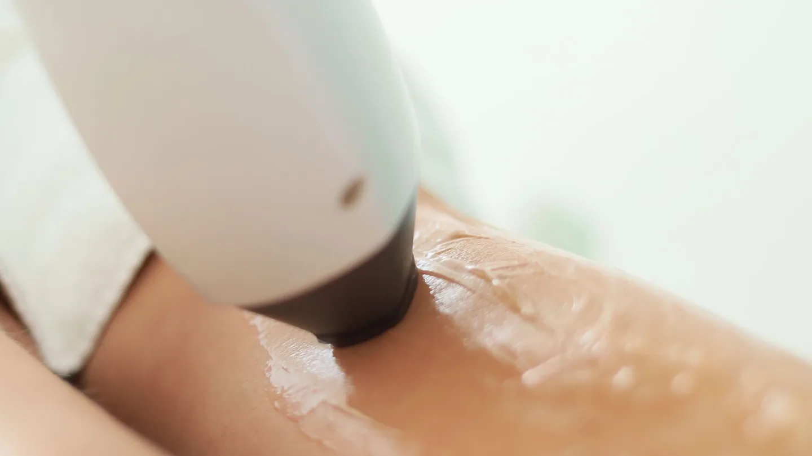

Lasertherapie · Chemnitz
Dauerhafte
Haarentfernung
Effektive, schonende Haarentfernung mit Premium-Diodenlaser – für dauerhaft glatte Haut an Gesicht und Körper. Fachärztlich durchgeführt in Chemnitz.
Schluss mit Rasieren und Wachsen
Der Diodenlaser gibt Lichtenergie gezielt an die Haarwurzel ab und schaltet sie nachhaltig aus. Von Sitzung zu Sitzung wird der Haarwuchs sichtbar feiner und spärlicher.
Die Behandlung eignet sich für viele Körperzonen – von Achseln und Beinen bis zum Gesicht. Wir stimmen sie individuell auf Haut und Haar ab.
→ Ratgeber: Dauerhafte Haarentfernung in Chemnitz – Ablauf & Kosten
Ein Einblick in die Behandlung

Symbolbild einer vergleichbaren Behandlung.
So läuft es ab
Beratung & Hauttest
Wir analysieren Haut und Haar und legen die passenden Parameter fest.
Laserbehandlung
Der Laser wird über die gewünschte Zone geführt – große Areale sind zügig behandelt.
Ruhephase
Behandelte Haare fallen in den Folgetagen aus; die Haut wird geschont.
Sitzungsserie
In mehreren Sitzungen im Abstand von Wochen wird der Haarwuchs dauerhaft reduziert.
Ihre Vorteile bei uns
Dauerhafte Haarentfernung – Ihre Fragen
Wie viele Sitzungen sind nötig?
Da Haare in Zyklen wachsen, sind mehrere Sitzungen im Abstand von einigen Wochen nötig. Die genaue Zahl hängt von Zone, Haut und Haar ab.
Ist die Behandlung schmerzhaft?
Moderne Diodenlaser sind gut verträglich. Meist wird ein kurzes, warmes Prickeln beschrieben; die Haut wird dabei gekühlt.
Für welche Haut- und Haartypen eignet sie sich?
Der Premium-Diodenlaser deckt ein breites Spektrum ab. In der Beratung prüfen wir, ob und wie die Behandlung für Sie geeignet ist.
Ist der Effekt dauerhaft?
Nach abgeschlossener Sitzungsserie ist der Haarwuchs dauerhaft deutlich reduziert. Gelegentliche Auffrischungen können sinnvoll sein.
Bereit für den ersten Schritt?
Vereinbaren Sie Ihr persönliches Beratungsgespräch – wir beraten Sie individuell und ehrlich.
Leipziger Straße 137, 09113 Chemnitz · Mo – Do 08:00–18:00 · Fr 08:00–14:00
Hinweis: Diese Seite dient der allgemeinen Information und ersetzt keine ärztliche Beratung. Behandlungsergebnisse sind individuell verschieden; ein bestimmtes Ergebnis kann nicht zugesichert werden. Das Video im Kopfbereich wurde mit künstlicher Intelligenz erzeugt, die übrigen Aufnahmen sind Symbolbilder. Sie zeigen weder reale Patientinnen und Patienten noch tatsächliche Aufnahmen aus unserer Praxis.